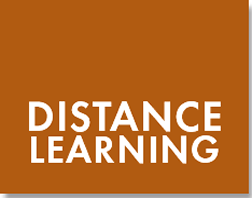
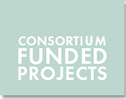

Distance Learning Courses
Instructional Tools for Teaching Language at a Distance
Language Learning Guidelines
University Committee on Educational Policy (UCEP)
Arabic Without Walls
Arabic Encounters
California Roadmap Summit
NEH Funded Projects
Punjabi Without Walls
Title VI National Heritage Language Resource Center
Advocates for Indigenous California Language Survival Conference
California Roadmap Summit
NEH Funded Projects
Colloquiums
Outreach

Annual Fall Language Enrollment Statistics
Grants for Curriculum Development
Online Language Testing Bank
(Under Development)
Advocates for Indigenous California Language Survival Conference
Biennial Conferences on Research & Practice
Distinguished Lecture Series
Publications
Title VI National Heritage Language Resource Center
Summer Workshops 2000-2004
Summer Workshops 2005-2009
Other Workshops
Systemwide-Curriculum Planning Meetings